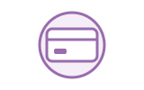

01At the Counter · នៅមុខបញ្ជរCounter
Hello! What can I get started for you today?
💡 Meaning: A standard greeting used by cafe staff to take your order. 🇰🇭 ខ្មែរ៖ សួស្តី! តើខ្ញុំអាចជួយយកអ្វីជូនអ្នកថ្ងៃនេះដែរ?
ការកុម្ម៉ង់អាហារ និងភេសជ្ជៈ · How to order coffee, ask about the menu, and pay politely
Ordering at a cafe is quick and polite. Use phrases like 'Can I please have...' and specify size or sweetness clearly.

Cash or CardPay and get receiptA clear flow: walk to the counter, state your order, customize options, and complete payment.
Space listen · ← → move · K show text
Hello! What can I get started for you today?
💡 Meaning: A standard greeting used by cafe staff to take your order. 🇰🇭 ខ្មែរ៖ សួស្តី! តើខ្ញុំអាចជួយយកអ្វីជូនអ្នកថ្ងៃនេះដែរ?
Can I please have an iced latte?
💡 Meaning: A polite way to order a cold coffee with milk and ice. 🇰🇭 ខ្មែរ៖ តើខ្ញុំអាចសុំកាហ្វេឡាតេទឹកកកមួយកែវបានទេ?
I would also like a chocolate muffin, please.
💡 Meaning: Polite phrasing to add a pastry or food item to your order. 🇰🇭 ខ្មែរ៖ ខ្ញុំសុំនំប៉័ងសូកូឡាមួយដែរ សូមអរគុណ។
Could you make that with less sugar, please?
💡 Meaning: Asking the barista to customize the sweetness level of your drink. 🇰🇭 ខ្មែរ៖ តើអាចជួយធ្វើដោយដាក់ស្ករតិចបានទេ?
Is that for here or to go?
💡 Meaning: Asking if you will drink inside the cafe or take it away. 🇰🇭 ខ្មែរ៖ តើអ្នកពិសារនៅទីនេះ ឬខ្ចប់ទៅក្រៅ?
To go, please. Thank you!
💡 Meaning: Telling the cashier that you want your order packed in a takeaway cup. 🇰🇭 ខ្មែរ៖ ខ្ចប់ទៅក្រៅ សូមអរគុណ!
How much is the total?
💡 Meaning: Asking for the final price of everything you ordered. 🇰🇭 ខ្មែរ៖ តើសរុបទាំងអស់ថ្លៃប៉ុន្មានដែរ?
Can I pay by credit card?
💡 Meaning: Inquiring whether the shop accepts cashless card payments. 🇰🇭 ខ្មែរ៖ តើខ្ញុំអាចទូទាត់តាមកាតឥណទានបានទេ?
'Can I please have' sounds friendly and polite, while 'Give me' can sound too direct or rude to staff.
💡 English: Adding 'please' and using 'can I have' makes customer interactions pleasant. 🇰🇭 ខ្មែរ៖ 'Can I please have' ស្តាប់ទៅមានភាពរួសរាយ និងគួរសម ចំណែកឯ 'Give me' អាចស្តាប់ទៅរាងគំរោះគំរើយបន្តិចចំពោះបុគ្គលិក។
Politeness helps create a great mood between customer and staff.
The password is on the bottom of your receipt.
💡 English: Cafes usually print the network code directly on customer receipts. 🇰🇭 ខ្មែរ៖ លេខសម្ងាត់មាននៅផ្នែកខាងក្រោមនៃបង្កាន់ដៃរបស់អ្នក។
Tap a word's play button to hear it. Hide one side, then recall it before you tap to check.
Hello! What can I get started for you today?
💡 Meaning: A standard greeting used by cafe staff to take your order. 🇰🇭 ខ្មែរ៖ សួស្តី! តើខ្ញុំអាចជួយយកអ្វីជូនអ្នកថ្ងៃនេះដែរ?
Can I please have an iced latte? I would also like a chocolate muffin, please.
💡 Meaning: A polite way to order a cold coffee with milk and ice. 🇰🇭 ខ្មែរ៖ តើខ្ញុំអាចសុំកាហ្វេឡាតេទឹកកកមួយកែវបានទេ? 💡 Meaning: Polite phrasing to add a pastry or food item to your order. 🇰🇭 ខ្មែរ៖ ខ្ញុំសុំនំប៉័ងសូកូឡាមួយដែរ សូមអរគុណ។
Could you make that with less sugar, please? Is that for here or to go? To go, please. Thank you!
💡 Meaning: Asking the barista to customize the sweetness level of your drink. 🇰🇭 ខ្មែរ៖ តើអាចជួយធ្វើដោយដាក់ស្ករតិចបានទេ? 💡 Meaning: Asking if you will drink inside the cafe or take it away. 🇰🇭 ខ្មែរ៖ តើអ្នកពិសារនៅទីនេះ ឬខ្ចប់ទៅក្រៅ? 💡 Meaning: Telling the cashier that you want your order packed in a takeaway cup. 🇰🇭 ខ្មែរ៖ ខ្ចប់ទៅក្រៅ សូមអរគុណ!
How much is the total? Can I pay by credit card?
💡 Meaning: Asking for the final price of everything you ordered. 🇰🇭 ខ្មែរ៖ តើសរុបទាំងអស់ថ្លៃប៉ុន្មានដែរ? 💡 Meaning: Inquiring whether the shop accepts cashless card payments. 🇰🇭 ខ្មែរ៖ តើខ្ញុំអាចទូទាត់តាមកាតឥណទានបានទេ?
Q. Why is 'Can I please have...' better than 'Give me...'?
Q. សំណួរ៖ ហេតុអ្វីបានជា 'Can I please have...' ល្អជាង 'Give me...'?
A. 'Can I please have' sounds friendly and polite, while 'Give me' can sound too direct or rude to staff.
A. 💡 English: Adding 'please' and using 'can I have' makes customer interactions pleasant. 🇰🇭 ខ្មែរ៖ 'Can I please have' ស្តាប់ទៅមានភាពរួសរាយ និងគួរសម ចំណែកឯ 'Give me' អាចស្តាប់ទៅរាងគំរោះគំរើយបន្តិចចំពោះបុគ្គលិក។
Q. What is the Wi-Fi password here?
Q. សំណួរ៖ តើលេខកូដ Wi-Fi នៅទីនេះលេខប៉ុន្មានដែរ?
A. The password is on the bottom of your receipt.
A. 💡 English: Cafes usually print the network code directly on customer receipts. 🇰🇭 ខ្មែរ៖ លេខសម្ងាត់មាននៅផ្នែកខាងក្រោមនៃបង្កាន់ដៃរបស់អ្នក។
Could you please give me a minute to look at the menu?
💡 English: Asking for more time to make a decision · 🇰🇭 តើអាចសុំពេលខ្ញុំមួយនាទីដើម្បីមើលម៉ឺនុយសិនបានទេ?
What do you recommend here?
💡 English: Asking the barista for their personal or popular suggestion · 🇰🇭 តើអ្នកមានអ្វីណែនាំពិសេសនៅទីនេះទេ?
Say it in your head first, then tap the box to check.